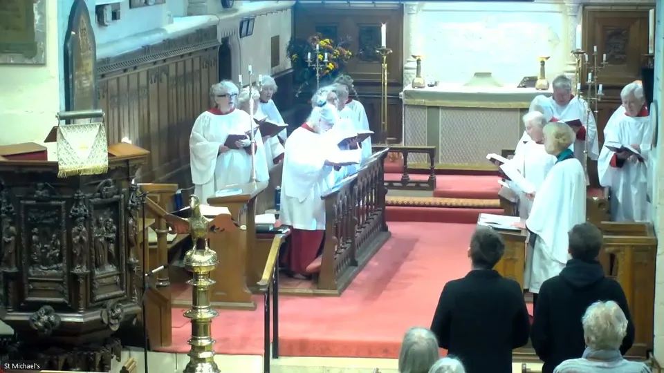
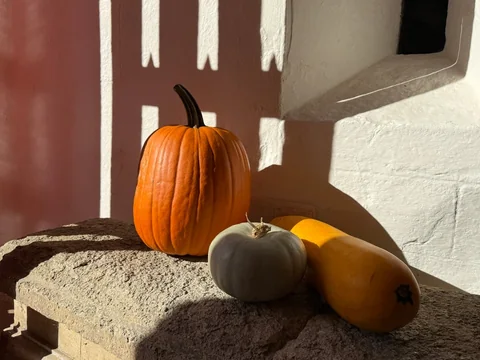
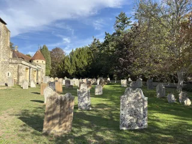

Last Sunday of Trinity 25th October 2026
Watch the latest service from St Michael & All Angels, Mickleham & Westhumble.
Watch on YouTubeUpcoming event
Flos Vocalis from Sinalunga, Italy
Celebrating friendship through music, from Italian songs to international classics.
Organised by Dorking & District Town Twinning Association.

From our parish
Life Events
Whether you are planning a baptism or wedding, or arranging a funeral, we are here to help with a warm welcome, pastoral care and meaningful services in our beautiful church and parish.


Parish Photographs
A glimpse of our church, people and parish through the seasons.
Explore the galleryDiscover St Michael’s
Explore the history of St Michael & All Angels, its church building, churchyard, people and the life of our parish today.
Supporting our work
Care for creation
St Michael & All Angels received the A Rocha UK Eco Church Silver Award in 2024, recognising the parish’s care for creation.
Discover our Eco Church workHelp us continue our work
Help care for our buildings, support ministry and serve our community.
Ways to giveOur wider church
Part of the Church of England and the Diocese of Guildford.
Learn more about the Diocese